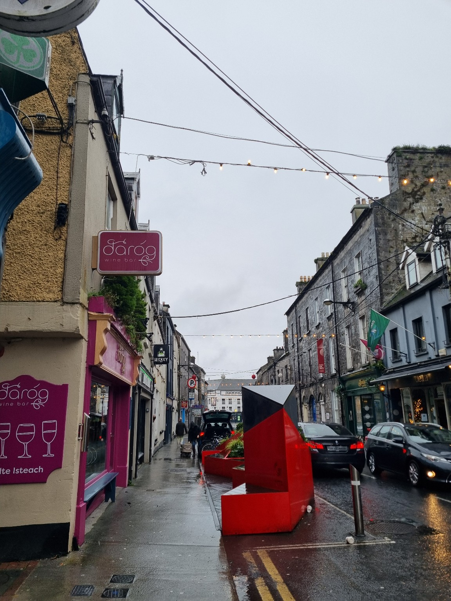

Ho partecipato a uno stage linguistico di 6 giorni a Galway, in Irlanda, ospitato da una host family. Durante questa esperienza, abbiamo avuto 3 giorni di lezioni dalle 9:00 alle 14:00 (l'ultimo giorno fino alle 16:00). Abbiamo anche esplorato la città, visitato le Cliffs of Moher e il castello di Athlone.
Inizialmente ho incontrato difficoltà nella comunicazione con la host family, sia per l'accento che per le differenze linguistiche. Tuttavia, grazie all'aiuto di giochi e laboratori sia presso il centro linguistico che organizzati dall’agenzia, sono riuscito a sbloccarmi e a migliorare molto.